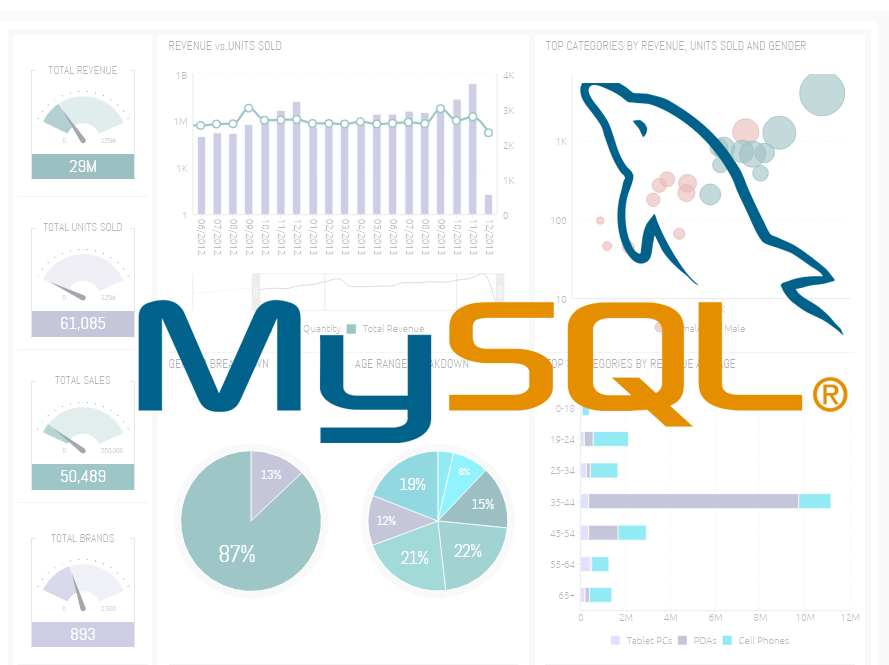

June 28, 2023
To find the patterns by the given data, and to provide recommendations to the Telangana government which can be used to increase their revenue by 2025. Also increase their tourism department and make model like Dubai tourism structure.


The HR data analytics challenges showcased in this portfolio reflect my expertise in leveraging data-driven insights to make strategic HR decisions. Through rigorous analysis and visualization techniques, I have successfully identified key trends, patterns, and drivers within HR datasets, enabling organizations to make informed decisions related to workforce planning, employee engagement, talent acquisition, and performance optimization. My passion for HR data analytics and my commitment to driving organizational success make me a valuable asset in today's data-centric HR landscape.
The hotel revenue project outlined in this portfolio highlights my expertise in leveraging data analysis techniques to optimize revenue generation and enhance hotel performance. Through a comprehensive analysis of revenue drivers, pricing strategies, occupancy rates, and revenue management techniques, I have successfully provided actionable insights to maximize revenue, improve profitability, and identify new revenue growth opportunities. With a data-driven approach and a focus on revenue optimization, I am equipped to contribute to the success of any hotel seeking to thrive in today's highly competitive hospitality industry.

Web scraping is a valuable skill that unlocks a wealth of information from the internet, empowering businesses and researchers with actionable insights. The projects and methodologies showcased in this portfolio demonstrate my proficiency in web scraping, from data extraction to cleansing and analysis. With the ability to extract and transform web data, I can contribute to various domains, including competitive intelligence, market research, lead generation, and academic studies, enabling data-driven decision-making and competitive advantage.

MySQL data analytics is a powerful approach to extracting valuable insights from vast datasets, enabling data-driven decision-making across industries. The projects and methodologies showcased in this portfolio highlight my proficiency in leveraging SQL queries, data manipulation techniques within MySQL to uncover patterns, trends, and correlations. By combining data extraction, cleaning, SQL-based analysis, advanced analytics, and visualization, I empower organizations to make informed decisions, optimize operations, and drive business growth using the rich insights derived from MySQL data.

Python's extensive libraries and powerful data analysis capabilities make it a valuable tool for deriving insights from complex datasets. The projects and methodologies showcased in this portfolio demonstrate my proficiency in Python data analytics, from data acquisition and preprocessing to exploratory data analysis and advanced analytics. With Python's versatility and my expertise in leveraging its libraries and techniques, I enable organizations to make data-driven decisions, uncover hidden patterns, and gain actionable insights for enhanced business outcomes.

Excel is a powerful tool for data analysis, offering a wide range of functions and capabilities to derive insights from diverse datasets. The projects and methodologies showcased in this portfolio demonstrate my proficiency in Excel data analytics, from data import and cleaning to exploratory data analysis and advanced analytics. With Excel's user-friendly interface and my expertise in leveraging its functions and tools, I enable organizations to perform data-driven decision-making, uncover trends, and generate valuable insights for improved business outcomes.